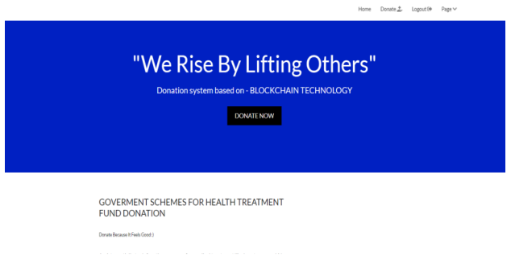
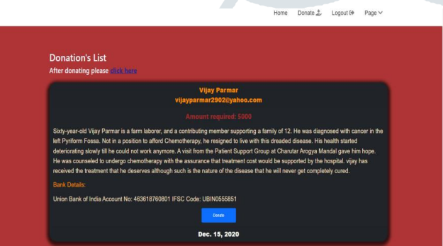
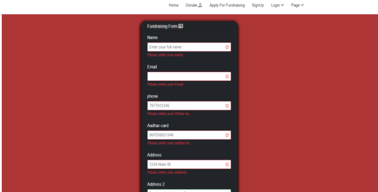

Blockchain innovation depends on an advanced and dispersed record which works in a straightforward climate without the requirement for a confided in power to approve data. Exchanges are approved by diggers explicit hubs in the Blockchain network committed to confirm, approve and record exchanges. This record contains the historical backdrop of every checked exchange while different duplicates of this one of a kind record are dispersed to all members across the organization. Blockchain innovation is in this manner dependent on an organization of PCs and open calculations and conventions instead of customary unified frameworks that depend on trust between various entertainers. Blockchain is the innovation behind Bitcoin, yet its applications go a long way past digital currencies. The Blockchain influences supposed “Brilliant Agreements,” in which terms are carried out in a code and can execute themselves when explicit conditions are met. An enormous number of frameworks and applications can be developed utilizing Brilliant agreement. The accompanying highlights make the progressive innovation of blockchain stick out according to our website-
- Decentralized:
Blockchains are decentralized in nature implying that no single individual or gathering holds the authority of the general organization.Donors and beneficiaries both can use the website with ease and ina decentralized manner where all the updates done are seen by donors and beneficiary each.
- Peer to Peer network:
With the utilization of Blockchain, the collaboration between two gatherings through a shared model is effectively cultivated without the prerequisite of any outsider
- Permanent :
The unchanging nature property of a blockchain alludes to the way that any information once composed on the blockchain can’t be changed. Carefully designed – With the property of permanence installed in blockchains, it gets simpler to identify altering of any information. In the website, Any alteration done by donor will be notified to the Admin.
The major hurdle that the top government faces is low level corruption that is sometimes impossible to track which deprives the needy people.Tracking it is a very difficult task. Here we propose a smart system to track funds allocated by the state government and public donors to beneficiaries as they travel through the blockchain process at each stage.
1.Paper topic – Blockchain suitability for government application
Year- 2018 .
Author- Mark.G
Publication- Public private analytic.
Purpose- A pilot program is exploring ways blockchain could streamline the process, making it more efficient for employers, less costly for the U.S. government, and safer for workers. For workers, this system would provide a job verification system, ensuring the job they are accepting actually exists and securing the terms of the employment contract.
2 Paper Topic: Blockchain for digital government
Year- 2019
Author- David Allessie
Publication- JRC (Joint Research Centre) Purpose- Agenda should focus on non- technological barriers, such as incompatibility between blockchain-based solutions and existing legal and organizational frameworks. This principal policy goal cannot be achieved by adapting technology to legacy systems.
3.Paper topic- Blockchain technology for government
Year- 2017
Author- Dave Bryson
Publication- Mitre
Purpose-Blockchain provide the most security as they are designed to operate in a trust-less environment, government users will be most interested in a Permissioned blockchain. However, the nature of a permissioned blockchain requires careful planning and governance to establish the parties participating in the consensus process.
4.Paper topic -Impact of Blockchain on fund distribution
Year- 2015
Author -Deloitte
Publication- World Economic Forum World Economic Forum
Purpose:Blockchain technology is a trending technology that would affect most business models, forcing entities to rethink their long term strategic visions. Because it is by essence disintermediated and trust-less, it makes no sense to apply this technology in isolation
The system comprises of following steps-
-Login or register for donation/fundraising.
-For donation purpose
- If already a member,login into the page ,click on the donate icon ,check the number of people that are listed to get funds according to their illness. Also read about the illness, money requirements and then donate through the payment mode.
-After donation,fill the form,upload the receipt of amount donated.
For fundraising purpose
- Fill the fundraising form ,give details i.e Name,aadhar card number, email id,Address,phone number,city.
-Enter details about the illness,choose the scheme that is needed for funds according to the needs. We have the following government Schemes ( Aam aadmi bhima yojana scheme,Ayushman bharat scheme,chief minister comprehensive insurance scheme, Employees state insurance scheme)
-Upload the medical certificate, income certificate, medical bill as a proof and the submit.
-Website also consist information about the website and developer, Can contact directly to the website developer,solve your doubts and queries through FAQ.
-For admin purpose
-This is only for admins to make necessary changes.
- Themes where background color, font color,link filter and form control have option to use drop-down or sticky position,it also shows recent admins.
-Admin interface – To make necessary changes to the form ,donors , fundraisers.
Authentication and Authorisation- Groups and users that is made or is to be made for special permission for website
-My App- It has after payment details of the donor,contact,ngo forms,valid forms and recent actions performed on the website.
- Consists of staff details,super user details
Super users are the ones who handle website for deletion, updation of the forms.
-Admin also has a feature to add fundraising form.These are the valid forms approved by the admin for the people who have posted their illness and are requesting for the donation.
Admin checks on through every detail and then publishes the story.

In the project, When a donor or beneficiary is registered a block is created and notified to the admin page. The records are registered and saved. Hashing algorithm is used in password and safe fund transferring.The donation made by the donor can also upload their receipt in the form for their personal validation for avoiding any tampering of data.

As the name says, state government fund allocation and transfer using the blockchain system.
-The government is the admin of the project.
-Donations from government schemes and local donors are collected and saved for the use of ill people.
-The donation is allocated to the beneficiary that have registered on the website for fundraiser,
-It is checked whether the beneficiary is valid and has genuine issues by checking their medical certificate and income certificate. Form and amount is verified and the money is safely transferred to the account directly of the beneficiary without having a 3 party in the middle. This proves that there is no chance of tampering and funds would be safely transferred to the beneficiaries account.
Overview of our website.
Here you can see our Home Page, with additional functions to be performed.



In this existing system , funds are allocated and tracked at every single stage till it reaches the beneficiaries account. The system is based on hashing. This will help the government in reducing fraud and keeping a clear record of the funds.Blockchain innovation to be utilized in government frameworks as these frameworks are moderate, thick, and prone to corruption.The proposed framework expects to tackle all misrepresentation submitted in the public authority area and give a chain of secure exchange of information , cash and other individual information.The conditional exercises can be performed a lot quicker and efficiently.There will be no requirement for the outsider and the exchanges will be regulated all the more sturdily and transparently.And likewise will assist with limiting human blunders and time delays.This framework will make the public authority framework activities considerably more secure and productive.
We can still add on the universal schemes from all over the world for fundraising to take it to the next level for huge funds required to the people in need
ACKNOWLEDGEMENT:We take this opportunity to express our deep sense of gratitude to our project guide and project co-ordinator , Mrs Hezal Lopes, for her continuous guidance and encouragement throughout the duration of our project work. It is because of her experience and wonderful knowledge, we can fulfil the requirement of completing the project within the stipulated time. We would also like to thank Dr.Jitendra Saturwar, head of computer engineering department for her encouragement, whole-hearted cooperation and support. We would also like to thank our Principal Dr. J. B. Patil and the management of Universal College of Engineering, Vasai, Mumbai for providing us all the facilities and the work friendly environment. We acknowledge with thanks, the assistance provided by departmental staff, library and lab attendants.
[1] K. Kim and T. Kang, “Does Technology Against Corruption Always Lead to Benefit? The potential risks and challenges of blockchain technology”, 2017.
[2] P. Mauro, “Corruption and Growth”, The quarterly journal of economics, vol. 110, no. 3, pp. 681–712, 1995
[3] M. S. Gupta and M. G. T. Abed, “Governance, corruption, and economic performance”, International Monetary Fund, 2002.
[4] V. Tanzi, “Corruption Around The World: Causes, consequences, scope, and cures”, Staff Papers, vol. 45, no. 4, pp. 559–594, 1998.
[5] H. Hou, “The Application of Blockchain Technology in E-government in China”, in 2017 26th International Conference on Computer Communication and Networks (ICCCN). IEEE, 2017, pp. 1–4.